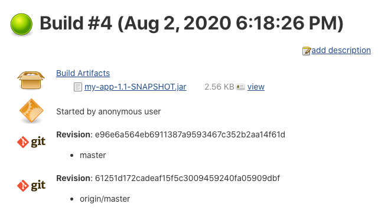
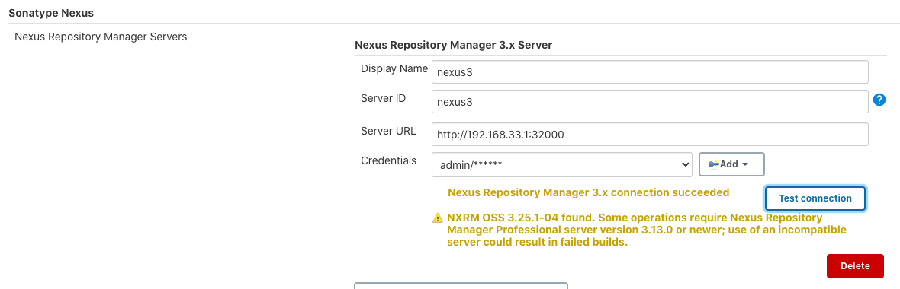
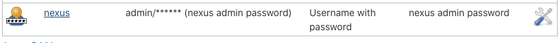
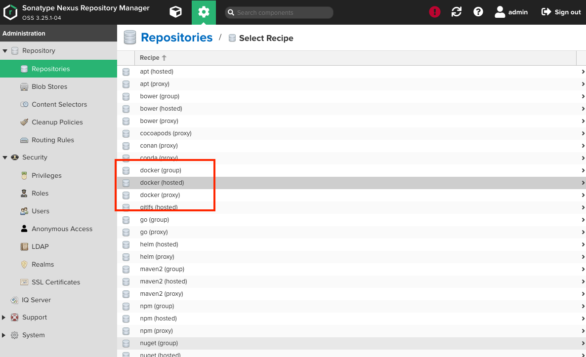
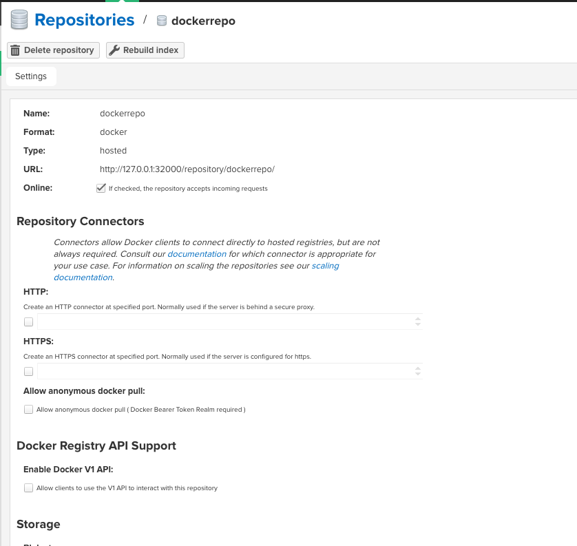
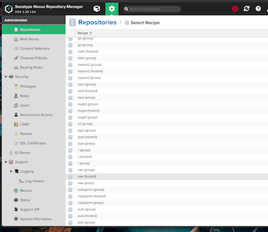
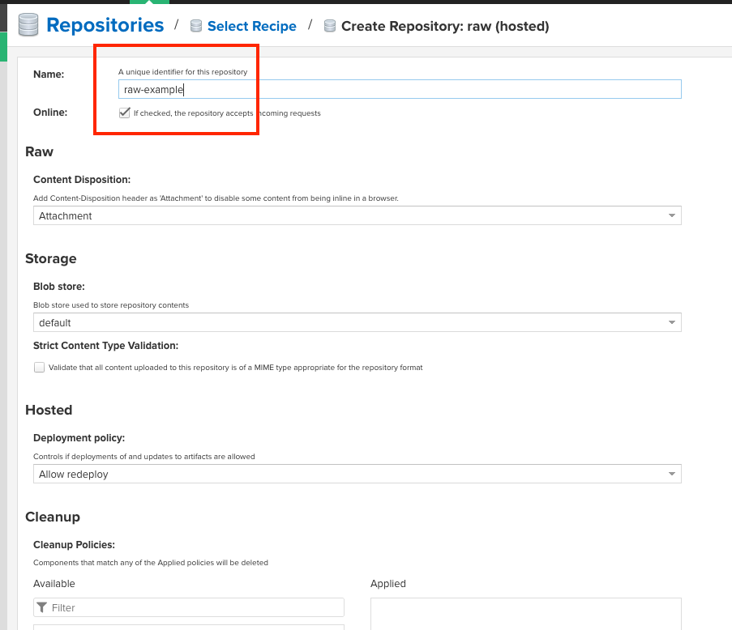
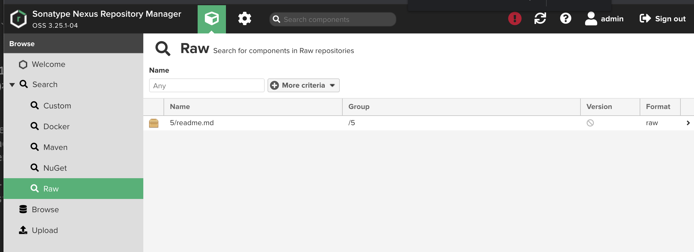
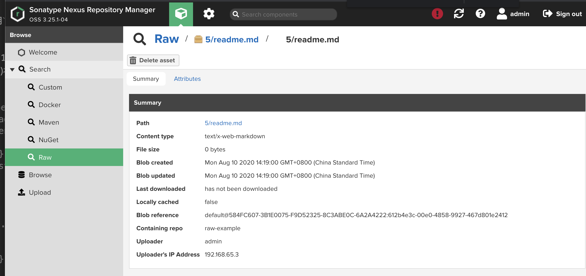
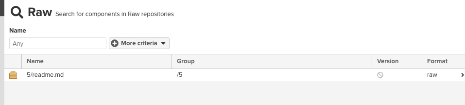

第二节 制品管理
1、 制品是什么
所谓制品，到底是什么呢？
An artifact is one of many kinds of tangible by-products produced during the development
换句话说，制品是软件开发过程中产生的多种有形副产品之一。另外，直译artifact，是人工制品的意思。所以，广义的制品还包括用例、UML图、设计文档等
而狭义的制品就可以简单地理解为二进制包。虽然有些代码是不需要编译就可以执行的，但是我们还是习惯于将这些可执行文件的集合称为二进制包。
本章讨论的是狭义的制品。行业内有时也将制品称为产出物或工件。
2、制品管理仓库
最简单的制品管理仓库就是将制品统一放在一个系统目录结构下。但是很少有人这样做，更多的做法是使用现成的制品库。
制品管理涉及两件事情：
- 一是如何将制品放到制品库中。
- 二是如何从制品库中取出制品。
由于每种制品的使用方式不一样，因此下面我们分别进行介绍。 目前现成眨制品库有：Nexus、Artifactory。
3、过渡到制品库
从手工打包到自动化打包，再将打好的包放到制品库中。这看似简单，但是要在团队中从无 到有地落地其实是一个很漫长的过程，特别是对于存在很多遗留项目的团队。每个团队都应该按 照自己当前情况进行调整，有时统一的解决方案不一定适合你。
曾经，笔者所在团队已经将部分项目的编译和单元测试放到Jenkins上执行，然而并没有人力及能力搭建Nexus。但是又期望能将自动打包好的JAR包放到各个环境中使用，以马上从持续集成中获益，怎么办？ 这时，archiveArtifacts步骤（https://www.jenkins.io/doc/pipeline/steps/core/）就派上用场了。它能对制品进行归档，然后你就可以从Jenkins页面上下载制品了
#!groovy
@Library('jenkinslib@master') _
def build = new org.devops.buildtools()
def sonar = new org.devops.sonarqube()
pipeline {
agent { node { label "hostmachine" }}
parameters {
string(name: 'srcUrl', defaultValue: 'http://192.168.33.1:30088/root/demo-maven-service.git', description: '')
choice(name: 'branchName', choices: 'master\nstage\ndev', description: 'Please chose your branch')
choice(name: 'buildType', choices: 'mvn', description: 'build tool')
choice(name: 'buildShell', choices: 'clean package -DskipTest\n--version', description: 'build tool')
}
stages{
stage('Checkout') {
steps {
script {
checkout([$class: 'GitSCM', branches: [[name: "${branchName}"]], doGenerateSubmoduleConfigurations: false, extensions: [], submoduleCfg: [], userRemoteConfigs: [[credentialsId: 'gitlab-admin-user', url: "${srcUrl}"]]])
}
}
}
stage('Build') {
steps {
script {
build.Build(buildType,buildShell)
}
}
}
}
post{
always{
archiveArtifacts artifacts: 'target/**/*.jar', fingerprint: true
}
}
}
-------------------------------------------------------
Running com.mycompany.app.AppTest
Tests run: 2, Failures: 0, Errors: 0, Skipped: 0, Time elapsed: 0.094 sec
Results :
Tests run: 2, Failures: 0, Errors: 0, Skipped: 0
[INFO]
[INFO] --- maven-jar-plugin:3.0.2:jar (default-jar) @ my-app ---
[INFO] Building jar: /home/vagrant/workspace/workspace/chap9_1/target/my-app-1.1-SNAPSHOT.jar
[INFO] ------------------------------------------------------------------------
[INFO] BUILD SUCCESS
[INFO] ------------------------------------------------------------------------
[INFO] Total time: 6.910 s
[INFO] Finished at: 2020-08-02T18:18:44Z
[INFO] ------------------------------------------------------------------------
[Pipeline] }
[Pipeline] // script
[Pipeline] }
[Pipeline] // stage
[Pipeline] stage
[Pipeline] { (Declarative: Post Actions)
[Pipeline] archiveArtifacts
Archiving artifacts
Recording fingerprints
接下来，我们详细介绍几个常用的archiveArtifacts的参数用法
artifacts（必填）：字符串类型，需要归档的文件路径，使用的是Ant风格路径表达式。fingerprint(可选）：布尔类型，是否对归档的文件进行签名。excludes（可选）：字符串类型，需要排除的文件路径，使用的也是Ant风格路径表达式。caseSensitive（可选）：布尔类型，对路径大小写是否敏感。ontylfSuccessful（可选）：布尔类型，只在构建成功时进行归档。
值得提的是，archiveArtifacts。步骤并不只用于归档JAR包，事实上，它能归档所有类型的制品 团队初期可以考虑使用这种方式管理简单的制品。
console output

4、管理Java栈制品
目前Java栈的构建工具以Maven及Gradle为主且Maven的用户最广泛。接下来我们使 用Maven作为主要工具来讲解制品管理。
4-1 使用Maven发布制品到Nexus中
当Nexus搭建好后就可以使用Maven Dep!oy插件上传JAR或WAR包到Nexus中了Deploy 插件是Apache Maven团队提供的官方插件，能将JAR包及POM文件发布到Nexus中口目前该插件的最新版本是3.25.1。在POM文件中这样定义：
<plugins>
<plugin>
<groupId>org.apache.maven.plugins</groupId>
<artifactId>maven—deploy—plugin</artifactld>
<versSon>3.25.1</version>
<plugin>
</plugins>
如果不需要自定义Deploy插件配置，则不需要在POM文件中定义。
使用Deploy插件发布需要以下几个步骤
- (1）配置发布地址。在Maven项目的POM文件中加人：
<distributionManagement>
<snapshotRepository>
<id>nexus-snapshot</id>
<name>nexus snapshot</name>
<url>http://<Nexus的地址>/repository/maven—snapshot</url>
</snapshotRepository>
<repository>
<id>nexus-release</id>
<name>my nexus relesse</name>
<url>http://<Nexus的地址>/repository/maven—releasese</url>
</repository>
</distributionManagement>
完成此步骤后我们就可以通过执行mvn clean deploy进行发布了。
Deploy插件会根据Maven项目中定义的version值决定是使用nexus-seapshot仓库还是nexus-release仓库。
当version值是以-SNAPSHOT后缀结尾时，则发布到nexus-seapshot仓库
- (2)配置访问
Nexus的用户名和密码。在Nexus中，我们配置了只有授权的用户名和密码才 能发布制品。这时需要在Maven的settings.xml中加人配置：
<servers>
<server>
<id>nexus—snapshot</id>
<username>admin</username>
<password>admin</password>
</server>
<server>
<id>nexus—relesse</id>
<username>admin</username>
<password>admin</password>
</server>
</servers>
4-2 使用Nexus插件发布制品
除了可以通过Maven发布JAR包，还可以使用Nexus Platform来插件实现。最新版本的Nexus Platform(3.9.20200722-164144.e3a1be0）已经同时支持Nexus 2.x和Nexus 3.x，只是它的文档更新不及时，大家都不知道它支持3.x版本了。
在安装好Nexus Platform插件后，根据以下步骤来使用。
- (1）进入
Manage Jenkins - Configure System - Sonatype Nexus页，设置Nexus 3.x的服务地址

- neuxs3
- http://192.168.33.1:32000/
需要注意的是:
- 在
Credentials选项处增加了一个具有发布制品到Nexus中的权限的用户名和密码凭证 Server ID字段的值设置完成后单击,在Jenkinsfile中会引用
Test connection按钮测试设置是否正确

- (2）在
Jenkinsfile中加入nexusPublisher步骤。
stage('Build') {
steps {
script {
build.Build(buildType,buildShell)
}
nexusPublisher(
nexusInstanceId: 'nexus3',
nexusRepositoryId: 'maven—releases',
packages: [
[
$class: 'MavenPackage',
mavenAssetList: [
[ classifier: '',
extension: '',
filePath: './target/my-app-1.1-SNAPSHOT.jar'
]
], //end of mavenAssetList
mavenCoordinate: [
artifactId: 'my-app',
groupId: 'com.mycompany.app',
packaging: 'jar', version: '1.1-SNAPSHOT' ]
] // end of packages
])
}
}
下面简单介绍一下nexusPublisher的参数。
nexusInstanceId：在Jenkins中配置Nexus 3.x时的Server IDnexusRepositoryId：发布到Nexus服务器的哪个仓库。mavenCoordinate: Maven包的坐标，packaging值与Maven中的packaging值一致，可以是jar、war、pom、hpi等。mavenAssetList：要发布的文件，如果是pom.xml，则extension必须填“xml"。
在实际工作中，笔者并不常使用此插件。原因如下：
- 每个
Maven项目都可能不同，必须为每个Maven项目写nexusPublisher方法。 - 对于多模块的
Maven项目，nexusPublisher的参数写起来十分锣唆。
但是介绍这个插件还是有必要的，一是大家可以根据实际情况进行选择；二是可以了解Jenkins与Nexus的集成程度。
5、使用Nexus管理Docker镜像
本节假设Jenkins机器上已经安装了Docker CE。检查在Jenkins上能否运行Docker的方法是：在Jenkinsfile中加人sh "docker PS"，语句，如果没有报错，就说明可以运行Docker
5.1 Nexus：创建Docker私有仓库
首先进人Nexus的仓库列表页：Administration -> Repository -> Repositories

单击“docker(hosted)"，进人Docker：私有仓库创建页，

- http://192.168.33.1:32000/repository/dockerrepo/
- dockerrepo
pipeline {
agent any
environment {
registry = "http://192.168.33.1:32500"
registryCredential = 'dockernexus'
}
stages {
stage('Build') {
steps {
withDockerRegistry([
credentialsId: "${registryCredential}",
url: "${registry}" ]) {
sh "docker build . -t ${registry}/hello:v2"
sh "docker push ${registry}/hello:v2"
}
}
}
}
}
6、管理原始制品
Nexus 提供了对raw仓库的支持。raw仓库可以被理解为一个文件系统，我们可以在该仓库中创建目录。
6-1 创建raw仓库
进入Administration -> Repository -> Repositories页。
单击“raw(hosted)"，进人raw仓库创建页。

输入仓库名称raw-example，单击“Create rcpository”按钮，确认后创建成功。

该仓库的地址是：＜你的Nexus地址>/repository/raw-example/。
6-2 上传制品获取制品
使用HTTP客户端就可以将制品上传到raw仓库中。我们使用Linux curl命令。几体步骤如下
- (1)在
Jenkins上添加Userame with password凭证 - (2)在
Jenkinsfile中加人上传制品的步骤
pipeline {
agent { node { label "hostmachine" }}
environment {
nexusRawUsernamePassword = credentials('nexus')
}
stages {
stage('Build')
{
steps {
sh "curl --user '${nexusRawUsernamePassword}' -T ../../readme.md http://192.168.33.1:32000/repository/raw-example/${BUILD_NUMBER}/readme.md"
}
}
}
}
为简单起见，我们直接使用构建号作为目录名称来区分每次上传的制品。curl命令的格式为：
curl --user '<username:password>' --upload-file <待上传制品的路径> <将制品保存到Nexus上的全路径>


将制品保存到Nexus上的全路径：如果目录不存在，Nexus将会自动创建。
- (3)在Nexus中，我们看到
readme.md文件已经上传成功，
在Jenkins pipeline中获取原始制品时，我们同样使用curl命令。
sh "curl --user '${nexusRawUsernamePassword}' -o readme.md http://192.168.33.1:32000/repository/raw-example/2/readme.md"

7、从其他pipeline中拷贝制品
在某些场景下，我们需要从另一个pipeline中拷贝制品。Copy Artifact插可以帮助我们实现。具体代码如下：
steps {
copyArtifacts(
projectName: "core",
selector: lastSuccessful(true)
)
}
- 从
core项目中拿到最后一次构建成功的制品。
接下来，我们详细介绍copyArtifacts步骤的参数。
projectname：字符串类型，Jenkins job或pipeline名称。selector:BuildSelector类型，从另一个pipeline中拷贝制品的选择器，默认拷贝最后一个制品。parameters：字符串类型，使用逗号分隔的键值对字符串（name1=value1,name2=value2)，用于过滤从哪些构建中拷贝制filter：字符串类型，Ant风格路径表达式，用于过滤需要拷贝的文件。excludes：字符串类型，Ant风格路径表达式，用于排除不需要拷贝的文件。target：字符串类型，拷贝制品的目标路径，默认为当前pipeline的工作目录。optional：布尔类型，如果为true，则拷贝失败，但不影响本次构建结果。fingerprintArtifacts：布尔类型，是否对制品进行签名，默认值为trueresultVariableSuffix：上例中，无法得知我们到底拿的是core项目的哪次构建的制品。CopyArtifact插件的设计是将其构建次数放到一个环境变量中。这个环境变量名就是在COPYARTIFACT_BUILD_NUMBER_后拼上resultVariabiLeSuffix，比如resultVariableSuffix值为corejob，那么就在pipeline中通过变量COPYARTIFACT_BUILD_NUMBER_corejob拿到源pipeline的构建次数了。
除projectname参数是必填的外，其他参数都是可选的。
下而介绍几种常用的获取选择器的方法。
lastSuccesSful：最后一次构建成功的制品。方法签名为lastSuccessful(boolean stable)。stable为true表示只取构建成功的制品，为false表示只要构建结果比UNSTABLE好就行。specific：指定某一次构建的制品。方法签名为specific(String bulidNumber)。buildNumber表示指定取第n次构建的制品。lastCompleted：最后一次完成构建的制品，不论构建的最终状态如何。方法签名为lastCompleted()。latestSavedBuild：最后一次被标记为keep forever的构建的制品。方法签名为latestSavedBuild()。
8、版本号管理
谈到制品，就必须谈到版本号的管理。版本号的制定并没有所谓的行业标准。比如谷歌浏览 器当前版本号为70.0.3538.110; Ubuntu操作系统当前版本号为18.10;由美国计算机教授高德纳 (Donald Ervin Knuth)编写的功能强大的排版软件TEX系统的版本号不断趋近于π，类似于这样：3.1415926。
8.1 语义化版本
GitHub提出了一种具有指导意义、统一的版本号表示规则，称为Semantic Versioning（语义化版本表示）。这也被人们称为三段式版本号。有了这套规则，用户一看版本号，就大概能猜到 一个软件两个版本之间的可能变化。
语义化版本格式为：主版本号、次版本号、修汀号。
版本号递增规则如下：
- 主版本号：当作了不兼容的API修改时。
- 次版本号：当作了向下兼容的功能性新增时。
- 修订号：当作了向下兼容的问题修正时。
先行版本号及版本编译元数据可以加到主版本号、次版本号、修订号”的后面，作为延伸。 以下是常用的修饰词。
- alpha: 内部版本。
- beta: 测试版本。
- rc: 即将作为正式版本发布。
- lts: 长期维护。
8.2 方便生成版本号的Version Number插件
VersionNumber (https://plugins.jenkins.io/versionnumber/）是一款用于生成版本号的插件，它
提供了VersionNumber步骤。具体使用方法如下：
script {
def version = VersionNumber versionPrefix: ${JOB_NAME}-", versionNumberString: 'v1.1.1.${BUILDS_ALL_TIME}'
echo "${version}"
}
注意：BUILDS_ALL_TIME只是占位符，并不是Jenkins或Version Number插件提供的环境变量。
VersionNumber步骤支持以下参数。
versionNumberString：字符串类型，版本号格式，用于生成版本号。只能使用单引号，以防格式中的占位符被转义。版本号格式支持多种占位符，稍后介绍。versionPrefix：字符串类型，版本号的前缀。projectStartDate：字符串类型，项目开始时间，格式为yyyy-MM-dd，用于计算项目开始后的月数和年数。worstResultForIncrement：字符串类型，如果本次构建状态比上一次构建状态更糟糕，则BUILDS_TODAY、BUILDS_THIS_WEEK、BUILDS_THIS_MONTH、BUILDS_THIS_YEAR占位符的值不会增加。worstResultForIncrement可以设置的值有SUCCESS、UNSTABLE、FAILURE、ABORTED、NOT_BUILT（默认）。此参数较少使用。
versionNumberString参数使用占位符生成版本号。部分占位符本身支持参数化。接下来分别介绍它们。
BUILD_DATE_FORMATTED：格式化的构建日期，支持参数化，如${BUILD_DATE_FORMATTED,"yyyy-MM-dd"}。BUILD_DAY：构建日期，支持x和xx参数。比如是12月2日，${BUILD_DAY｝将返回2,${BUILD_DAY,X}将返回2,${BUILD_DAY,XX}将返回03。BUILD_WEEK：今年构建的星期数，支持x和xx参数。BUILD_MONTH：今年构建的月数，支持x和xx参数。BUILD_YEAR：今年构建的年份。
比如构建的时间为2018-12-02，那么BUILD_DAY的值为2, BUILD_WEEK的值为49,BUILD_MONTH的值为12, BUILD_YEAR的值为2018。
接下来是一组和构建数相关的占位符：BUILDS_TODAY、 BUILDS_THIS_WEEK
、BUILDS_THIS_MONTH、 BUILDS_THIS_YEAR，它们分别表示当天、本星期、本月、本年完成的构建数。BUILDS_ALL_TIME表示自从项目开始后完成的总构建数。
MONTHS_S工NCE_PROJECT_START和YEARS_SINCE_PROJECT_START分别表示自项目开始日期起已过去的日历月数和年数。